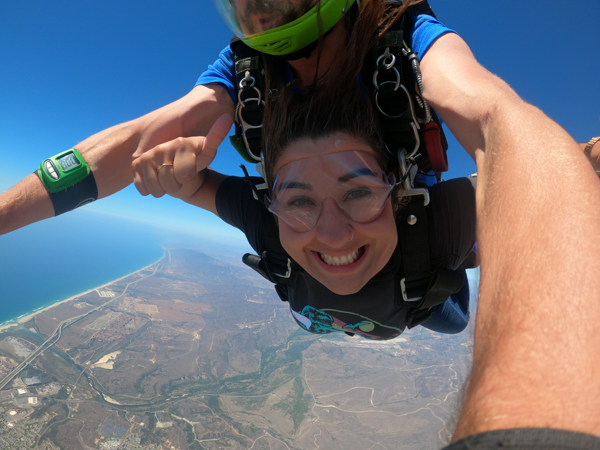

Julie Barragan
Home
About
Hobbies
A New Nurse is Created
Graduation Day!
Conquering Her Fears

Facing her fear of heights
To the Top of
Xunantunich
Making it all the way to the top of the Mayan Ruin in Belize
 Making it all the way to the top of the Mayan Ruin in Belize
Making it all the way to the top of the Mayan Ruin in Belize